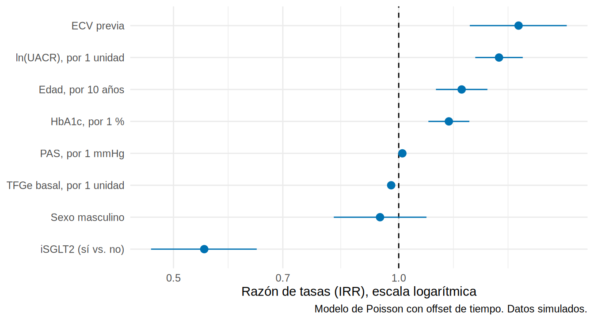
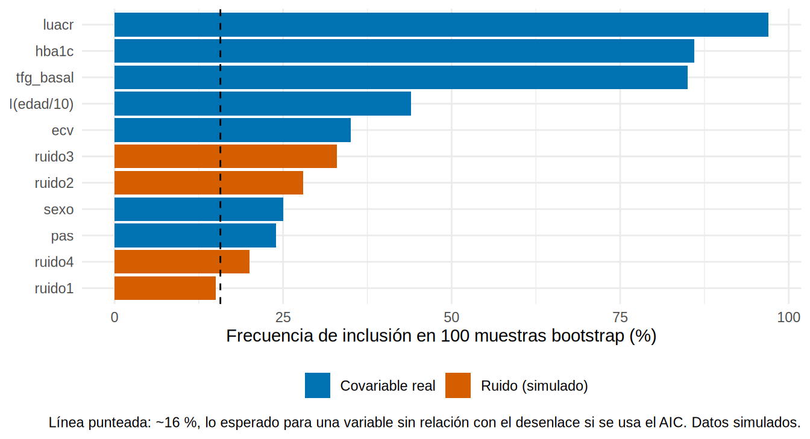

library(tidyverse)
library(broom)
library(sandwich)
source("R/funciones_extra_cap78.R")
ckd <- read_csv("Bases/ckd_isglt2.csv", show_col_types = FALSE) |>
mutate(sexo = factor(sexo, levels = c("Mujer", "Hombre")), luacr = log(uacr))
variables <- c("isglt2", "I(edad/10)", "sexo", "hba1c", "pas", "tfg_basal", "luacr", "ecv")
etq <- c(isglt2 = "iSGLT2 (sí vs. no)", `I(edad/10)` = "Edad, por 10 años", sexoHombre = "Sexo masculino",
hba1c = "HbA1c, por 1 %", pas = "PAS, por 1 mmHg", tfg_basal = "TFGe basal, por 1 unidad",
luacr = "ln(UACR), por 1 unidad", ecv = "ECV previa")Cómo reportar una regresión (y la Table 2 fallacy)
Nota🩺 Escenario
Tu coautor te devuelve el borrador con dos comentarios: “En la Tabla 2 pusiste los coeficientes de todas las variables y en el texto dices que la HbA1c es ‘un factor de riesgo independiente’… y las covariables las elegiste con stepwise, ¿no?”. Dos errores de moda en uno. En este subcapítulo aprendes a presentar un modelo con claridad, por qué no todo coeficiente significa lo que parece y cómo elegir covariables sin dejar que lo haga un algoritmo ciego.
Lo que vamos a hacer
- Armar una tabla de resultados cruda y ajustada (y un gráfico de coeficientes) reutilizable.
- Entender la Table 2 fallacy con un ejemplo con verdad conocida.
- Ver por qué el stepwise es inestable, qué recomienda la literatura (iniciativa STRATOS) y cómo justificar las covariables.
Paso 1. Qué debe contener el reporte
Siguiendo STROBE, un modelo bien reportado dice qué se estimó, cómo y con qué datos:
Tip💡 Checklist de reporte de una regresión
Paso 2. Una tabla de resultados reutilizable
Preparamos los datos. Usamos el modelo del 8.3 para el desenlace “evento renal” con el tiempo de seguimiento como offset (razón de tasas, IRR):
La función tabla_univ_multi() (en R/funciones_extra_cap78.R) ajusta un modelo por cada variable (la estimación cruda) y un modelo con todas (la ajustada), y las presenta lado a lado con su IC y su p. Es la tabla más informativa de un estudio observacional porque muestra cuánto cambia la estimación al ajustar:
tab_cm <- tabla_univ_multi(ckd, desenlace = "evento", variables = variables, familia = poisson,
offset = "tiempo_meses", exponenciar = TRUE, etiquetas = etq)
tab_cm |>
mutate(across(everything(), \(x) replace_na(x, ""))) |>
knitr::kable()| Variable | Crudo (IC 95 %) | p (crudo) | Ajustado (IC 95 %) | p (ajustado) |
|---|---|---|---|---|
| iSGLT2 (sí vs. no) | 0.54 (0.46, 0.63) | <0.001 | 0.55 (0.47, 0.65) | <0.001 |
| Edad, por 10 años | 1.53 (1.43, 1.64) | <0.001 | 1.21 (1.12, 1.31) | <0.001 |
| Sexo masculino | 0.95 (0.83, 1.10) | 0.520 | 0.94 (0.82, 1.09) | 0.429 |
| HbA1c, por 1 % | 1.24 (1.16, 1.31) | <0.001 | 1.17 (1.10, 1.24) | <0.001 |
| PAS, por 1 mmHg | 1.02 (1.01, 1.02) | <0.001 | 1.01 (1.01, 1.02) | <0.001 |
| TFGe basal, por 1 unidad | 0.96 (0.95, 0.97) | <0.001 | 0.98 (0.97, 0.99) | <0.001 |
| ln(UACR), por 1 unidad | 1.44 (1.35, 1.54) | <0.001 | 1.36 (1.27, 1.46) | <0.001 |
| ECV previa | 1.62 (1.40, 1.87) | <0.001 | 1.45 (1.24, 1.68) | <0.001 |
Cómo se lee. Cada fila es una variable: a la izquierda su IRR cruda (sola) y a la derecha su IRR ajustada (con las demás). Mira dos filas. La edad pasa de 1.53 (1.43, 1.64) a 1.21 (1.12, 1.31) al ajustar: parte de su asociación cruda era en realidad de la TFGe, la albuminuria y otras variables. El iSGLT2, en cambio, casi no se mueve (0.54 (0.46, 0.63) frente a 0.55 (0.47, 0.65)), porque las diferencias entre los grupos se compensan: los tratados son más jóvenes y con más TFGe (lo que favorece al fármaco), pero con más albuminuria (lo que lo desfavorece). Que el ajuste cambie poco no demuestra que no haya confusión: la fragilidad no está en el modelo.
Con el paquete gtsummary (no se ejecuta aquí) la misma tabla se arma con tres funciones:
# Con el paquete gtsummary (no se ejecuta aquí)
library(gtsummary)
univ <- ckd |> select(evento, isglt2, edad, sexo, hba1c, pas, tfg_basal, luacr, ecv) |>
tbl_uvregression(method = glm, y = evento, method.args = list(family = poisson), # un modelo por variable
exponentiate = TRUE, pvalue_fun = \(x) style_pvalue(x, digits = 3))
multi <- glm(evento ~ isglt2 + I(edad / 10) + sexo + hba1c + pas + tfg_basal + luacr + ecv,
data = ckd, family = poisson) |>
tbl_regression(exponentiate = TRUE, pvalue_fun = \(x) style_pvalue(x, digits = 3))
tbl_merge(list(univ, multi), tab_spanner = c("**Crudo**", "**Ajustado**")) # lado a lado
Advertencia⚠️ Mirar la tabla cruda no es para elegir variables
Verás artículos que dicen “se incluyeron en el modelo multivariable las variables con p < 0.05 (o 0.20) en el análisis univariable”. No lo hagas: descarta confusores que solo se “ven” en conjunto y no depende de ninguna lógica causal. La columna cruda se presenta para que el lector vea cuánto cambió el ajuste, no para seleccionar.
Paso 3. Un gráfico de coeficientes
Un gráfico de puntos con IC se lee más rápido que una tabla de 10 filas. Aquí la IRR ajustada de cada variable en escala logarítmica:
ma <- glm(evento ~ isglt2 + I(edad / 10) + sexo + hba1c + pas + tfg_basal + luacr + ecv + offset(log(tiempo_meses)),
data = ckd, family = poisson)
tidy(ma, conf.int = TRUE, exponentiate = TRUE) |>
filter(term != "(Intercept)") |>
mutate(term = recode(term, !!!etq), term = fct_reorder(term, estimate)) |>
ggplot(aes(estimate, term, xmin = conf.low, xmax = conf.high)) +
geom_vline(xintercept = 1, linetype = "dashed") +
geom_pointrange(color = "#0072B2") +
scale_x_log10() +
labs(x = "Razón de tasas (IRR), escala logarítmica", y = NULL,
caption = "Modelo de Poisson con offset de tiempo. Datos simulados.") +
theme_minimal(base_size = 11)
La línea punteada en 1 es el “no efecto”: un IC que la cruza no permite descartar que no haya efecto. Pero cuidado con cómo se interpretan estas filas, y de eso trata la siguiente sección.
Paso 4. La falacia de la Tabla 2
La “Tabla 2” de muchos artículos muestra todos los coeficientes del modelo ajustado y los autores los interpretan como si cada uno fuera un efecto. Es un error (Westreich y Greenland, 2013), porque cada coeficiente responde a una pregunta distinta, con un conjunto de ajuste distinto:
- El conjunto de ajuste del iSGLT2 (la exposición de interés) está diseñado para cerrar los caminos de puerta trasera de esa exposición.
- Para la HbA1c, la UACR es un mediador (la glucemia alta aumenta la albuminuria, y esta aumenta el riesgo). Si se la incluye, el coeficiente de la HbA1c muestra solo su efecto directo, no el total.
Lo comprobamos con la IRR de la HbA1c con y sin la UACR en el modelo:
m_con <- ma
m_sin <- update(m_con, . ~ . - luacr)
irr_hba1c <- function(m) round(exp(c(IRR = coef(m)["hba1c"], confint.default(m)["hba1c", ])), 3)
rbind(`Con UACR (efecto directo)` = irr_hba1c(m_con), `Sin UACR (efecto total)` = irr_hba1c(m_sin)) IRR.hba1c 2.5 % 97.5 %
Con UACR (efecto directo) 1.167 1.096 1.243
Sin UACR (efecto total) 1.248 1.175 1.327Qué vemos. El efecto total de la HbA1c (alrededor de 1.25 por punto) es mayor que el directo (1.17): el modelo que usamos para el iSGLT2 subestima el efecto de la glucemia porque se “come” la parte que pasa por la albuminuria. Interpretar como “efecto de la HbA1c” el coeficiente de la Tabla 2 es la Table 2 fallacy.
Qué hacer en la práctica:
- Reporta el coeficiente de la exposición de interés (con su conjunto de ajuste justificado).
- Presenta el resto de las covariables como ajuste, sin interpretarlas causalmente; o, si quieres estimar el efecto de otra, construye un modelo aparte con su conjunto de ajuste (DAG).
- Etiqueta la tabla: “los coeficientes de las covariables no deben interpretarse como efectos causales”.
Paso 5. Selección de variables: lo que sí y lo que no
La primera pregunta es para qué es el modelo: de eso depende cómo elegir las variables.
- Efecto causal de una exposición: se eligen desde un DAG (Cap. 3): confusores sí; mediadores y colisionadores, no.
- Predicción (Cap. 17): conocimiento clínico más penalización (LASSO) y validación interna.
- Exploración: con mucha cautela, y declarándolo exploratorio.
Por qué el stepwise ciego es mala idea
Para estimar un efecto, la selección por valor p o stepwise (eliminación hacia atrás o selección hacia adelante) es inadecuada: (1) descarta confusores con p alto en el modelo del desenlace aunque sesguen la estimación de la exposición; (2) los IC y los p del modelo final no son válidos, porque ignoran que se eligió el modelo con los mismos datos; (3) es inestable: con otra muestra, saldría otro modelo.
Qué recomienda la literatura (STRATOS)
La iniciativa STRATOS (grupo temático 2, que se ocupa de la selección de variables) y, en particular, la revisión de Heinze, Wallisch y Dunkler (2018) proponen una receta en tres pasos que conviene seguir:
- Preespecifica un conjunto de trabajo con conocimiento previo (estudios anteriores, un DAG, el sentido común) antes de mirar los datos. No aplicar selección a las variables con un efecto “fuerte” conocido (edad, albuminuria en ERC).
- Decide si aplicar selección según el número de eventos por variable candidata (EPV, calculado sobre el modelo global). Como orientación aproximada: con EPV > 25 la selección es posible, si se acompaña de un estudio de estabilidad; con EPV entre 10 y 25 hace falta además contracción (shrinkage) o estimación penalizada; con EPV ≤ 10, no se recomienda seleccionar (estima el modelo global, con contracción). Si seleccionas, prefiere la eliminación hacia atrás, con el AIC como criterio por defecto (equivale a un nivel de significación de ≈ 0.157).
- Estudia la estabilidad: repite la selección en muestras bootstrap y reporta con qué frecuencia entra cada variable. Si no hay selección que hacer, la inferencia se hace en el modelo global.
Estabilidad de la selección: una demostración
Veamos qué pasa con una muestra pequeña (800 pacientes, con 120 eventos). Añadimos 4 variables de puro ruido (generadas al azar, simuladas, sin relación alguna con el desenlace) a las 7 covariables reales, y dejamos que una eliminación hacia atrás por AIC elija (la exposición, el iSGLT2, se mantiene siempre). El EPV global es 120 / 11 ≈ 11: justo en la zona de riesgo. Repetimos el procedimiento en 100 muestras bootstrap con estabilidad_seleccion():
set.seed(2024)
muestra <- slice_sample(ckd, n = 800) |>
mutate(ruido1 = rnorm(n()), ruido2 = rnorm(n()), ruido3 = rnorm(n()), ruido4 = rnorm(n())) # ruido SIMULADO
candidatas <- c("I(edad/10)", "sexo", "hba1c", "pas", "tfg_basal", "luacr", "ecv",
"ruido1", "ruido2", "ruido3", "ruido4")
est <- estabilidad_seleccion(muestra, desenlace = "evento", exposicion = "isglt2",
candidatas = candidatas, B = 100, familia = binomial, semilla = 5)
est$seleccionadas # el modelo que eligió el algoritmo en la muestra original[1] "isglt2" "hba1c" "tfg_basal" "luacr" c(eventos = sum(muestra$evento), EPV = sum(muestra$evento) / length(candidatas),
modelos_distintos_en_100_muestras = est$n_modelos_distintos, pct_veces_el_modelo_original = est$pct_modelo_original) eventos EPV
120.00000 10.90909
modelos_distintos_en_100_muestras pct_veces_el_modelo_original
75.00000 6.00000 Qué vemos. El algoritmo eligió 3 covariables (hba1c, tfg_basal, luacr) y descartó la edad, que es un confusor de la relación tratamiento-desenlace. Pero lo importante es la inestabilidad: en 100 muestras bootstrap aparecen 75 modelos distintos y el modelo original solo se repite en 6 % de ellas. Veamos con qué frecuencia entró cada variable:
est$inclusion |>
mutate(variable = fct_reorder(variable, inclusion_pct),
tipo = if_else(str_detect(variable, "ruido"), "Ruido (simulado)", "Covariable real")) |>
ggplot(aes(inclusion_pct, variable, fill = tipo)) +
geom_col() +
geom_vline(xintercept = 15.7, linetype = "dashed") +
scale_fill_manual(values = c("Covariable real" = "#0072B2", "Ruido (simulado)" = "#D55E00"), name = NULL) +
labs(x = "Frecuencia de inclusión en 100 muestras bootstrap (%)", y = NULL,
caption = "Línea punteada: ~16 %, lo esperado para una variable sin relación con el desenlace si se usa el AIC. Datos simulados.") +
theme_minimal(base_size = 11) + theme(legend.position = "bottom")
Cómo se lee. Solo la ln(UACR), la TFGe basal y la HbA1c entran con alta frecuencia. Los confusores “débiles” (edad, ECV, sexo, PAS) entran entre el 24 y el 44 % de las veces, y las variables de puro ruido se cuelan entre el 15 y el 33 % (cerca de la tasa de “falsos positivos” del AIC, ~16 %). Con pocos eventos, el algoritmo no distingue bien entre señal débil y ruido: la selección de variables con estos datos es una lotería. Sigue la receta: preespecifica con tu DAG y no dejes que el algoritmo decida las covariables.
Una alternativa práctica: el cambio en la estimación
Cuando la pregunta es el efecto de una exposición, un criterio más sensato que el p es: ¿cuánto se mueve la estimación de la exposición al quitar cada covariable? Con toda la cohorte (5 000 pacientes):
b_full <- coef(ma)["isglt2"]
vars_cov <- setdiff(variables, "isglt2")
map_dfr(vars_cov, \(v) {
f <- reformulate(c("isglt2", setdiff(vars_cov, v), "offset(log(tiempo_meses))"), "evento")
m <- glm(f, data = ckd, family = poisson)
tibble(variable_quitada = v, IRR_sin_ella = exp(coef(m)["isglt2"]),
cambio_pct = 100 * (exp(coef(m)["isglt2"]) / exp(b_full) - 1))
}) |> arrange(desc(abs(cambio_pct))) |> mutate(across(where(is.numeric), \(x) round(x, 3)))# A tibble: 7 × 3
variable_quitada IRR_sin_ella cambio_pct
<chr> <dbl> <dbl>
1 luacr 0.646 17.5
2 I(edad/10) 0.501 -8.80
3 tfg_basal 0.511 -7.03
4 hba1c 0.563 2.41
5 ecv 0.556 1.10
6 pas 0.545 -0.871
7 sexo 0.55 0.131Qué vemos. Quitar ln(UACR) cambia la IRR del iSGLT2 en ~17 %, y la edad y la TFGe basal en 7-9 %: son confusores importantes que deben quedar en el modelo. El sexo (0.1 %) no cambia nada, pero lo mantenemos por razones causales (variable clínica básica), no por el p. Una regla práctica (a veces citada): conservar toda variable que cambie la estimación > 10 %. Es un complemento del DAG, no un sustituto; en esta lista la edad y la TFGe (7-9 %) quedan cerca del umbral y las mantenemos por criterio clínico.
Eventos por variable
Con pocos eventos un modelo grande sobreajusta. Como guía: ≥ 10-20 eventos por parámetro estimado. Aquí hay 765 eventos y 8 coeficientes (sin contar el intercepto): holgura de sobra. En estudios pequeños, restringe el modelo a los confusores más importantes o usa puntuación de propensión (Cap. 12), que resume muchas covariables en una.
Paso 6. Plantilla de párrafo de Métodos
“Se estimó la razón de tasas de evento renal compuesto asociada con el inicio de iSGLT2 mediante regresión de Poisson con offset del logaritmo del tiempo de seguimiento. El modelo ajustó por edad, sexo, HbA1c, presión arterial sistólica, TFGe basal, albuminuria (logaritmo natural) y enfermedad cardiovascular previa, seleccionadas a partir de un diagrama causal (Figura X) y no por criterios estadísticos. Se reportan estimaciones crudas y ajustadas con IC 95 %. Los coeficientes de las covariables no se interpretan como efectos causales. Se verificó la linealidad con splines y se usaron errores estándar robustos. Los análisis se realizaron en R 4.3 (paquetes tidyverse, broom, sandwich).”
Importante🎯 En resumen
- Reporta la estimación cruda y ajustada con IC, el número de eventos, los supuestos revisados y los datos faltantes.
tabla_univ_multi()y el gráfico de coeficientes dan reportes rápidos y reproducibles. - Table 2 fallacy: los coeficientes de las covariables no son efectos causales; para cada exposición, un conjunto de ajuste distinto (con mediadores, el coeficiente es solo el efecto directo).
- Para efectos causales, elige las covariables con el DAG (preespecificadas), no con stepwise ni con el p univariable. Si seleccionas, estudia la estabilidad (frecuencias de inclusión por bootstrap) y respeta el EPV.
- Usa el cambio en la estimación como complemento para identificar confusores importantes y vigila los eventos por variable.
Ejercicio
- Usa
tabla_univ_multi()confamilia = gaussian,exponenciar = FALSEy el desenlacependiente_tfg(8.2) para presentar la tabla cruda/ajustada del modelo lineal. - ¿Qué pasa con el coeficiente de la PAS al quitar la
luacr? ¿Por qué? (Pista: ¿es la UACR un mediador de la PAS?) - Mini-taller. Repite el flujo completo con la pregunta “¿el iSGLT2 se asocia con evento renal a 36 meses?”: (a) Tabla 1 por grupo (7.2); (b) tabla bivariada con pruebas de hipótesis (8.1); (c) regresión cruda y ajustada con Poisson robusto (8.3), justificando los confusores con un DAG; (d) revisa los supuestos solo del modelo de la exposición; (e) escribe el párrafo de Métodos.
Nota editorial
- Capítulo redactado con asistencia de IA y revisado por el autor. Todos los datos son simulados (incluidas las variables de “ruido” de la demostración).